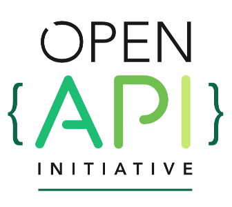

An introduction to
swagger

by Fabian Ihl
Motivation
What is swagger?
Swagger is a formal specification surrounded by a large ecosystem of tools for REST APIs.
Why swagger?
Alternatives
- RAML
- API Blueprint
Common goals
- Easy to write
- Comfortable to read
- Documentation / Client / Server generation
- Language agnostic
- Open source
What about WSDL 2.0?
- Core concept SOAP not REST oriented
- Sparse documentation
- Limited community
- Hard to read
- Tedious to write
- Limited REST specific tool chain
Comparison
| RAML | API Blueprint | Swagger | |
|---|---|---|---|
| Format | yaml | markdown | json/yaml |
| Github (repos) | 587 | 293 | 2209 |
| Stackoverflow | 330 | 770 | 3802 |
Back to swagger
License
Apache 2.0
Support for
CLOJURE D Erlang GO HASKELL JAVA JAVASCRIPT TYPESCRIPT .NET NODE.JS PERL PHP PYTHON RUBY SCALA
Features
Specification
- Documentation
- Sandboxes
- Client code generation
- Server code generation
- Design-First Approach
When to integrate?
Top down
Bottom up
Specification
Format
JSON, YAML
data types: JSON Schema Draft 4
Specification
Structure
Info
The object provides metadata about the API.
Paths
Holds the relative paths to the individual endpoints. Describes the operations available.
Definitions
An object to hold data types that can be consumed and produced by operations.
Info
swagger: 2.0
title: Swagger Sample App
description: This is a sample server Petstore server.
termsOfService: http://swagger.io/terms/
contact:
name: API Support
url: http://www.swagger.io/support
email: support@swagger.io
license:
name: Apache 2.0
url: http://www.apache.org/licenses/LICENSE-2.0.html
version: 1.0.1
Description
Contact information
License
API version
(See info.yaml in samples)
Paths
paths:
/hello/{user}:
get:
description: Returns a greeting to the user!
parameters:
- name: user
in: path
type: string
required: true
description: The name of the user to greet.
responses:
200:
description: Returns the greeting.
schema:
type: string
400:
description: Invalid characters in "user" were provided.
Path
Method
Parameters
Responses
(See paths.yaml in samples)
Definitions
definitions:
User:
type: object
required:
- name
- email
properties:
id:
type: integer
format: int64
name:
type: string
description: Must be unique
email:
type: string
format: email
example: me@example.com
dateJoined:
type: string
format: date
permissions:
type: array
items:
type: string
enum:
- READ
- WRITE
- CREATE
- DELETE
example: ['READ', 'CREATE']
Name
Required properties
Properties ...
Integers
Strings
Dates
Complex structures
(See definitions.yaml in samples)
Definitions in Paths
paths:
/users/:
get:
description: Returns a list of users
responses:
200:
description: Success
schema:
type: array
items:
$ref: '#/definitions/User'
Array of users
(See definitions_paths.yaml in samples)
Full example
swagger: '2.0'
info:
title: Sample API
description: Sample api representing an user resource
version: "1.0.0"
host: localhost:8000
basePath: /v1
produces:
- application/json
consumes:
- application/json
paths:
/users/:
get:
summary: Returns a list of users
responses:
200:
description: Success
schema:
type: array
items:
$ref: '#/definitions/User'
post:
summary: Create a new user
parameters:
- name: body
in: body
required: true
schema:
$ref: '#/definitions/User'
responses:
201:
description: Created
schema:
$ref: '#/definitions/User'
400:
description: Input error
/users/{id}:
get:
summary: Returns a specific user
parameters:
- name: id
in: path
required: true
type: integer
responses:
200:
description: Success
schema:
$ref: '#/definitions/User'
404:
description: User not found
put:
summary: Update an user
parameters:
- name: id
in: path
required: true
type: integer
- name: body
in: body
required: true
schema:
$ref: '#/definitions/User'
responses:
200:
description: Success
schema:
$ref: '#/definitions/User'
400:
description: Input error
404:
description: User not found
delete:
summary: Delete an user
parameters:
- name: id
in: path
required: true
type: integer
responses:
204:
description: Success
404:
description: User not found
definitions:
User:
type: object
required:
- name
- email
properties:
id:
type: integer
format: int64
name:
type: string
description: Must be unique
email:
type: string
format: email
example: me@example.com
dateJoined:
type: string
format: date
permissions:
type: array
items:
type: string
enum:
- READ
- WRITE
- CREATE
- DELETE
example: ['READ', 'CREATE']
(See full_sample.yaml in samples)
Tools
Editors
Swagger Editor
Pros
- Web based (Localstorage)
- json/yaml import/export
- Live preview
- Validation + Error detection
- Vast options for client/server generation
- Can send test requests to API implementation
- Open source
- May be installed locally
Cons
- Recalculation of live preview can start to lag for large files
Restlet Studio
Pros
- Web based (Localstorage or subscription)
- GUI based!
- swagger json/raml import/export
- Some options for client/server generation
Cons
- Limited validation and error detection
- Does not support full swagger specification
- Proprietary
Tools
Documentation
Swagger UI
(Node.js)
Swagger UI
- Elaborate layout
- Integrated ui to send test calls
- Sligtly complex to get started
bootprint-openapi
github.com/nknapp/bootprint-openapi
(fka. bootprint-swagger)
(Node.js)
Features
- Clear layout
- Static html file
- Can be converted to pdf
- Supports custom templates and styling
- Easy setup and generation
Requirements
{
"name": "bootprint-sample",
"version": "1.0.0",
"private": true,
"scripts": {
"html": "node node_modules/bootprint/bin/bootprint.js swagger ../samples/full_sample.yaml html"
},
"devDependencies": {
"bootprint": "*",
"bootprint-swagger": "*"
}
}
(See package.json in bootprint sample)
Usage
- Install
npm install
- Compile HTML
npm run html
Tools
Dev server
Swagger-server
github.com/BigstickCarpet/swagger-server
(Node.js)
Features
- Supports JSON and YAML
- Easy to set up
- Auto reload
- Mocks all CRUD operations
- Validates requests
- Temporary storage
- Can load sample data
- Easy to extend with custom logic
Requirements
{
"name": "server-sample",
"version": "1.0.0",
"private": true,
"devDependencies": {
"swagger-server": "^1.0.0-alpha.18"
}
}
(See package.json in server samples)
Server code
var swagger = require('swagger-server');
var server = swagger('../samples/full_sample.yaml');
server.listen(8000, function() {
console.log('Your REST API is now running at http://localhost:8000');
});
(See simple.js in server samples)
Or even less...
require('swagger-server')('../samples/full_sample.yaml').listen(8000);
Try the sample
Loading sample data
var swagger = require('swagger-server');
var Resource = swagger.Resource;
var server = swagger('../samples/full_sample.yaml');
server.dataStore.save(
new Resource('/v1/users/1', {name: 'Bob', email: 'bob@example.com', dateJoined: '2016-01-01'}),
new Resource('/v1/users/2', {name: 'Joe', email: 'joe@example.com', dateJoined: '2016-01-02'})
);
server.listen(8000, function() {
console.log('Your REST API is now running at http://localhost:8000');
});
(See sample_data.js in server samples)
Try the sample
Custom logic
Test if email contains '@'
var swagger = require('swagger-server');
var Resource = swagger.Resource;
var server = swagger('../samples/full_sample.yaml');
server.post('/v1/users/', function(req, res, next) {
if(req.body.email.indexOf('@') === -1) {
res.status(400).send('Invalid email');
} else {
next();
}
});
server.listen(8000, function() {
console.log('Your REST API is now running at http://localhost:8000');
});
(See custom_logic.js in server samples)
Try the sample
Future
Open API Initiative

A Linux Foundation Collaborative Project
Open API Initiative
SmartBear Software is donating the Swagger Specification directly to the OAI as the basis of this Open Specification.
Goal
The OAI is focused on creating, evolving and promoting a vendor neutral API Description Format based on the Swagger Specification.
Members
Thank you
Questions ?
View this presentation at:
akuryou.github.io/introduction-to-swagger
Clone it, fork it, try the samples at: